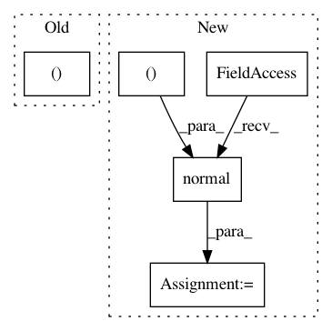

8e0ca26e5571d47425fc73bb3bb118082b742d00,geomstats/geometry/spd_matrices.py,SPDMatrices,random_uniform,#SPDMatrices#Any#,54
Before Change
Points sampled in SPD(n).
n = self.n
size = (n_samples, n, n) if n_samples != 1 else (n, n)
mat = 2 * gs.random.rand(*size) - 1
spd_mat = GeneralLinear.exp(Matrices.to_symmetric(mat))
After Change
Parameters
----------
tangent_vec : array_like, shape=[..., n, n]
Tangent vector at base point.
base_point : array_like, shape=[..., n, n]
Base point.
Returns
-------
inverse_differential_log : array-like, shape=[..., n, n]
Inverse of the differential of the matrix logarithm.
eigvectors, transp_eigvectors, numerator, denominator, temp_result =\
In pattern: SUPERPATTERN
Frequency: 4
Non-data size: 5
Instances
Project Name: geomstats/geomstats
Commit Name: 8e0ca26e5571d47425fc73bb3bb118082b742d00
Time: 2021-03-17
Author: nicolas.guigui@inria.fr
File Name: geomstats/geometry/spd_matrices.py
Class Name: SPDMatrices
Method Name: random_uniform
Project Name: freelunchtheorem/Conditional_Density_Estimation
Commit Name: 6fbef6a3631d94991ab02a9f7411e3b6fd954dfc
Time: 2019-01-12
Author: jonas.rothfuss@gmx.de
File Name: tests/unittests_estimators.py
Class Name: TestConditionalDensityEstimators_2d_gaussian
Method Name: test_NKDE_with_2d_gaussian
Project Name: scipy/scipy
Commit Name: e9402dd24f071e7dbe4e0c2421f90f285ca31896
Time: 2015-11-15
Author: person142@users.noreply.github.com
File Name: scipy/ndimage/tests/test_filters.py
Class Name:
Method Name: test_gh_5430
Project Name: eriklindernoren/PyTorch-GAN
Commit Name: fc9e5824ad7bd3094f5012dc6fc3d2348481a2f4
Time: 2019-04-02
Author: eriklindernoren@live.se
File Name: implementations/bicyclegan/bicyclegan.py
Class Name:
Method Name: sample_images